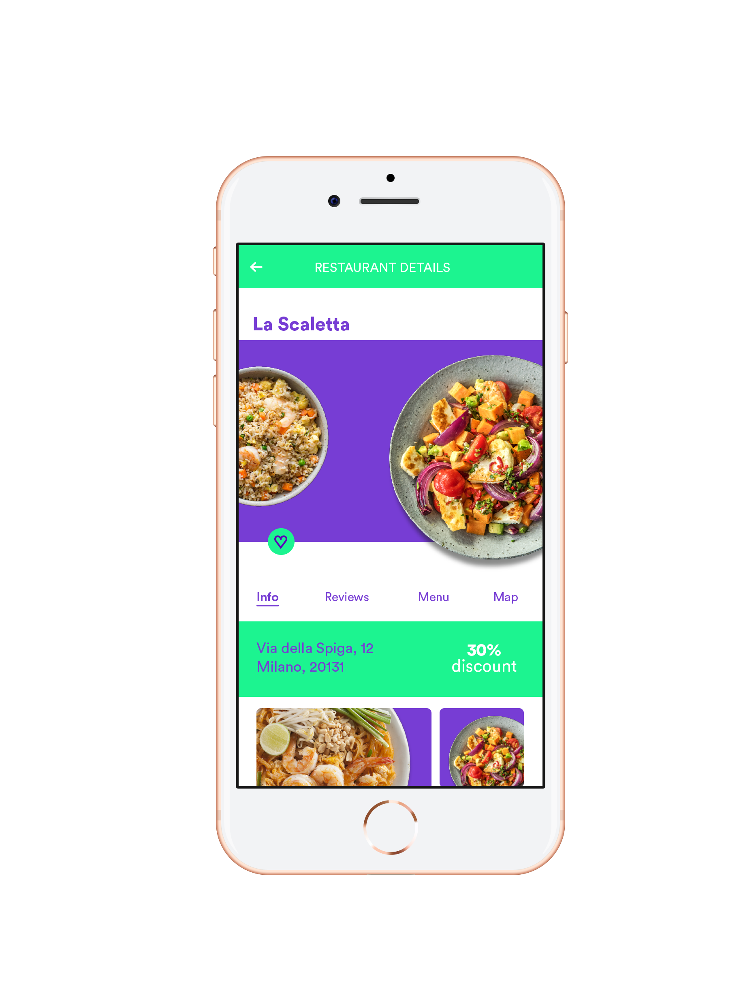
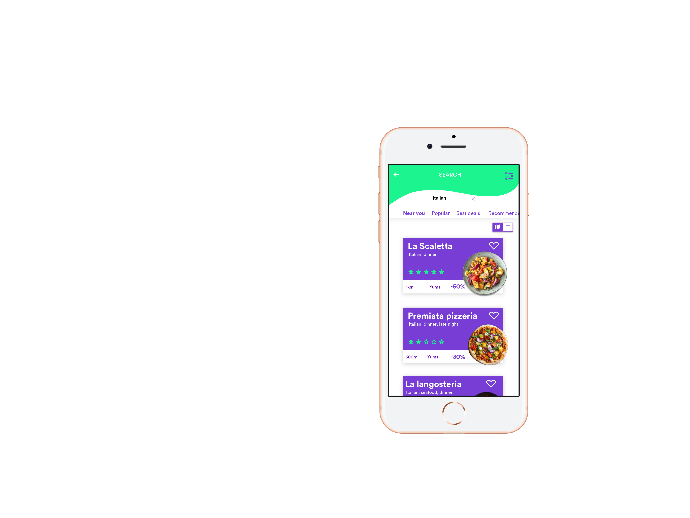
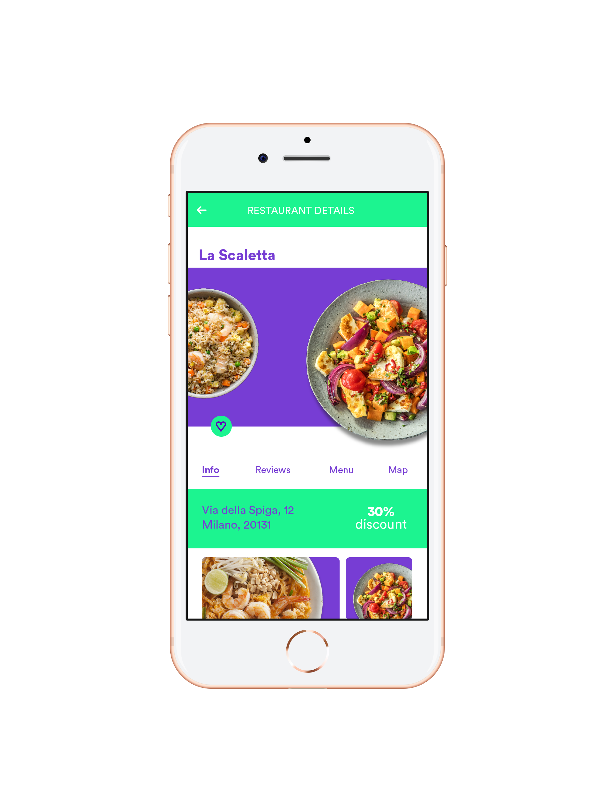
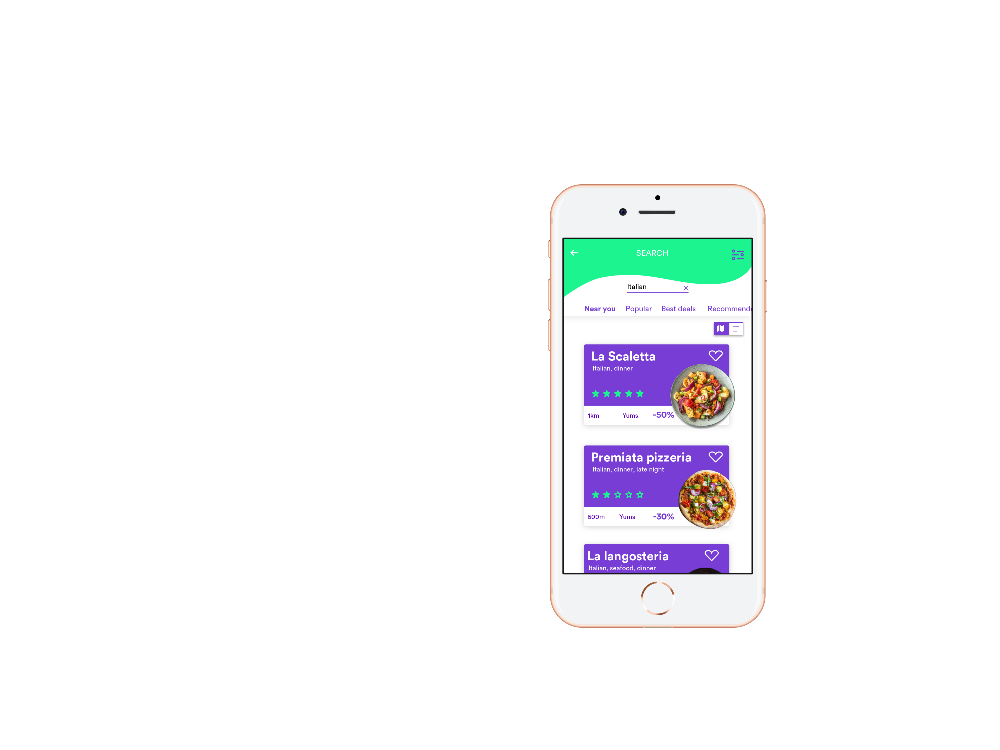

The Fork Redesign
Ui/Ux Design
 Ui/Ux Design
 Redesign TheFork by doing research, finding people’s needs and their issues with the service. Adding new features or redesigning existing ones. Prototyping and testing it.
Software Sketch Invision Studio Illustrator Photoshop
Typography Circular STD
Colors #1cf490 #773dd4
Where Scuola Politecnica di Design
Who Giorgia Ballante Charlotte Cambau Owen Hung Matteo Coordiner